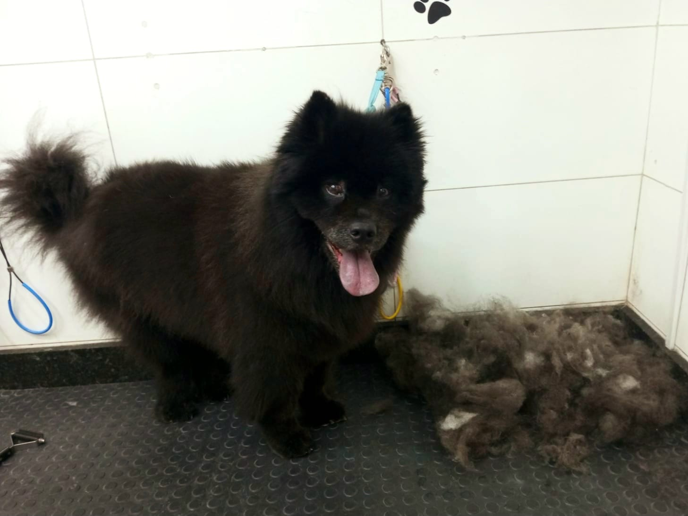

Mime seu pet com nosso cuidado.
Oferecemos um serviço de banho e tosa de qualidade excepcional para garantir que seu melhor amigo fique limpo, cheiroso e feliz.
Sobre Nós

O nosso Pet Shop é uma empresa relativamente nova. Desde o início, a nossa missão foi proporcionar um serviço de banho e tosa diferenciado, que não se limitasse apenas a dar banho e tosar os animais, mas que também oferecesse uma experiência completa e agradável para os pets e seus donos.
O serviço de banho e tosa é essencial para a saúde e bem-estar dos animais de estimação, e consiste na higiene completa do animal, incluindo banho, secagem, tosa e cuidados com as unhas e ouvidos. O Lollipop Pet se destaca dos demais serviços por oferecer um local totalmente estruturado para o serviço, com um ofurô especialmente projetado para banho de animais, produtos de alta qualidade da marca Hydra, e profissionais altamente qualificados e experientes.
A nossa equipe de profissionais qualificados é treinada para lidar com diferentes tipos de animais, desde os mais calmos até os mais agitados. Além disso, estamos sempre atualizando nossos métodos de banho e tosa, utilizando as técnicas mais modernas e seguras para garantir a saúde e o bem-estar dos animais.
Nós também oferecemos serviços adicionais, como tosa higiênica, corte de unhas, limpeza de ouvidos e hidratação de pelagem.
Em resumo, o Lollipop Pet - Centro de Estética Animal se destaca por oferecer um serviço completo e diferenciado de banho e tosa, em um ambiente agradável e seguro para os animais. Com profissionais qualificados e experientes, produtos de alta qualidade e um atendimento personalizado, estamos comprometidos em oferecer aos nossos clientes e seus pets uma experiência única e inesquecível.
Serviços
- Banho: inclui a lavagem completa do animal com shampoo e condicionador, além de secagem com toalhas e/ou secador, escovação e limpeza das orelhas.
- Tosa: inclui o corte de pelos em áreas específicas do animal, como cabeça, corpo, pernas e cauda. Existem diferentes tipos de tosa, como tosa higiênica, tosa bebê, tosa na tesoura, tosa na máquina, entre outras.
- Hidratação: tratamento com produtos especiais que ajudam a hidratar e fortalecer a pelagem do animal.
- Limpeza de Ouvidos: remoção de sujeira e excesso de cerume dos ouvidos do animal, evitando problemas de saúde.
- Remoção de pelos: retirada dos pelos mortos da pelagem do animal, ajudando a manter a pele saudável e a pelagem mais bonita.
- Corte de unhas: corte cuidadoso das unhas do animal para evitar que elas cresçam em excesso e causem desconforto.

- Desembolo: remover nós, desembaraçar a pelagem e deixá-la mais saudável e bonita
- Banho de Ozônio: banho com ozônio, uma técnica inovadora que utiliza o gás ozônio para limpeza profunda da pele e pelagem do animal, eliminando fungos e bactérias que podem causar problemas de saúde. Além disso, o banho de ozônio também pode ajudar a reduzir odores desagradáveis e aliviar coceiras na pele.
- Taxi Dog: é um serviço de transporte especializado para animais de estimação que oferece segurança e conforto durante o deslocamento.

- Ofurô: é uma banheira japonesa projetada para cães e gatos, que proporciona um banho relaxante e terapêutico para os animais de estimação.
Depoimentos
Edno

"Muito bom, muito limpo, excelente lugar para levar seu AUMIGO para um banho e tosa, pessoas bacanas, tratam muito bem seu pet. Já fiz o pacote quinzenal com eles. Super Recomendo."
Jaqueline
"Minha experiência com a Lollipop, sempre é a melhor, um lugar limpo, donos bem atenciosos, oferecem sempre o melhor para os meus filhos de quatro patinhas saem felizes, bem limpinhos, super recomendo e com certeza é o melhor pet da vila alpina!!"
Priscila
"Nunca vi tanto carinho e atenção com os meus Meninos Celino e Estopinha ♥️, recomendo para todos os serviço de vcs, eles voltaram tão cheirosos e com os pelos bem macios"
Bruna
"Lugar maravilhoso, conheci através da internet marquei horário via whatsapp, pessoal prontamente nos respondem ,são pessoa simpática que nos deixam a vontade . Utilizo o táxi dog onde eles comparecem para retirar o teco e depois me entrega , sempre pontual e simpáticos . O teco vem sempre muito cheiroso , a tosa e bem feita e ainda eles sempre tiram foto em temas atuais e posta nas redes sociais. Já indiquei amigas que também amam o estabelecimento. Só tenho agradecer o cuidado com meu filhos de 4 patas . Super indico os profissionais, pessoas do bem que cuidam dos nossos cachorrinhos com muito amor e carinho ❤️"
Patrícia
"Quero agradecer o profissionalismo, a atenção, dedicação e amor aos meus pets. São profissionais excepcionais, prestativos, atenciosos e justos. Super indico os serviços prestados pelo Pet."
Thais
"Excelente atendimento, dá pra ver como meu filho Chico é bem tratado pela alegria que ele fica quando vê o Carlos! Super transparentes quanto aos serviços e ótimos valores! Super recomendo, obrigada pelo amor no que vcs fazem!"
Produto